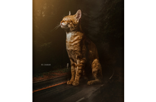
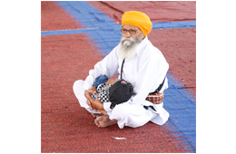
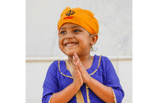

Photography

Art is a gift of mother nature,a life without art is totaly grey.
As everyone has his/her own powers and there wills ,to achieve them helps them to live a life.
Same as i found myself towards Photography and picture art.I follow my heart and the destiny do wonders for me.
But getting the equipments are just like watching the road where you want to go.Walking is another experience.
so,to fulfill my desire i joined a Professional Photography course in my city Ludhiana.
Im sharing my Services that i learnt in that course and experienced in field.
- Studio Photography
- Wedding Photography
- Editing in Lightroom
- Manipulation Art
- High end skin Retouching
- Landscape Photography
- Working with Box and Lights
I will be happy if you can spare sometime and give a look to mywork over Instagram.
Link provided in footer
Social Services

God is the master of our life,the one who created, running and destroy everything.
I feel blissful that i got a chance in my life to serve for people ,who really can do wonders when you just love them and give a little help
.
When i was 19 years old i joined a welfare sports club name SHER-E-PUNJAB sports academy chakar.i worked there for 6 years volunterly and learnt some priceless experiences.
Skills that i earned there
- Money management
- Team Work
- Leadership
- Employee dealings and management
- Public dealing
- Gym Trainer
In that 6 years , SHER-E-PUNJAB sports academy gives more than 150 medals in Boxing on State Level,more than 40 at National,7 International medals.
A junior world Champion (2015),and still counting..
Teacher

Joy of life is to get from it and serve to others.
Together we can make our and otherones life a beautiful experience of there journey.
It's better to serve and give happines that you have by sharing,Beacause no one can get it to another world what he/she had have.
As my parents are Teachers , i got chance from home to experience the honour of teaching in there Schools.
Some Fields in which i teach the younger ones.
- Punjabi
- Maths
- Physics
- Computer
- Physical Education & First aid
- Social Science
I believe that a teacher is like a light lamp, who can provide light in the dark stage of student's life,so they can walk on the way of there desires
Photography
Art is a gift of mother nature,a life without art is totaly grey.
Im sharing my Services that i learnt in that course and experienced in field.
- Studio Photography
- Wedding Photography
- Editing in Lightroom
- Manipulation Art
- High end skin Retouching
- Landscape Photography
- Working with Box and Lights
Social Services
God is the master of our life,the one who created, running and destroy everything.
Skills that i earned there
- Money management
- Team Work
- Leadership
- Employee dealings and management
- Public dealing
- Gym Trainer
Teacher
Joy of life is to get from it and serve to others.
Some Fields in which i teach the younger ones.
- Punjabi
- Maths
- Physics
- Computer
- Physical Education & First aid
- Social Science